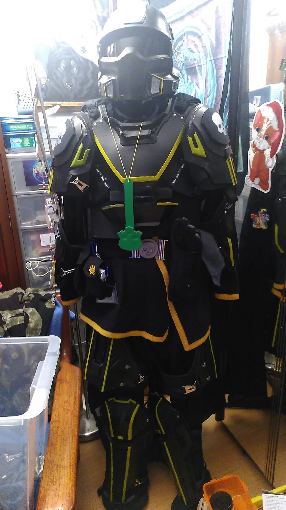
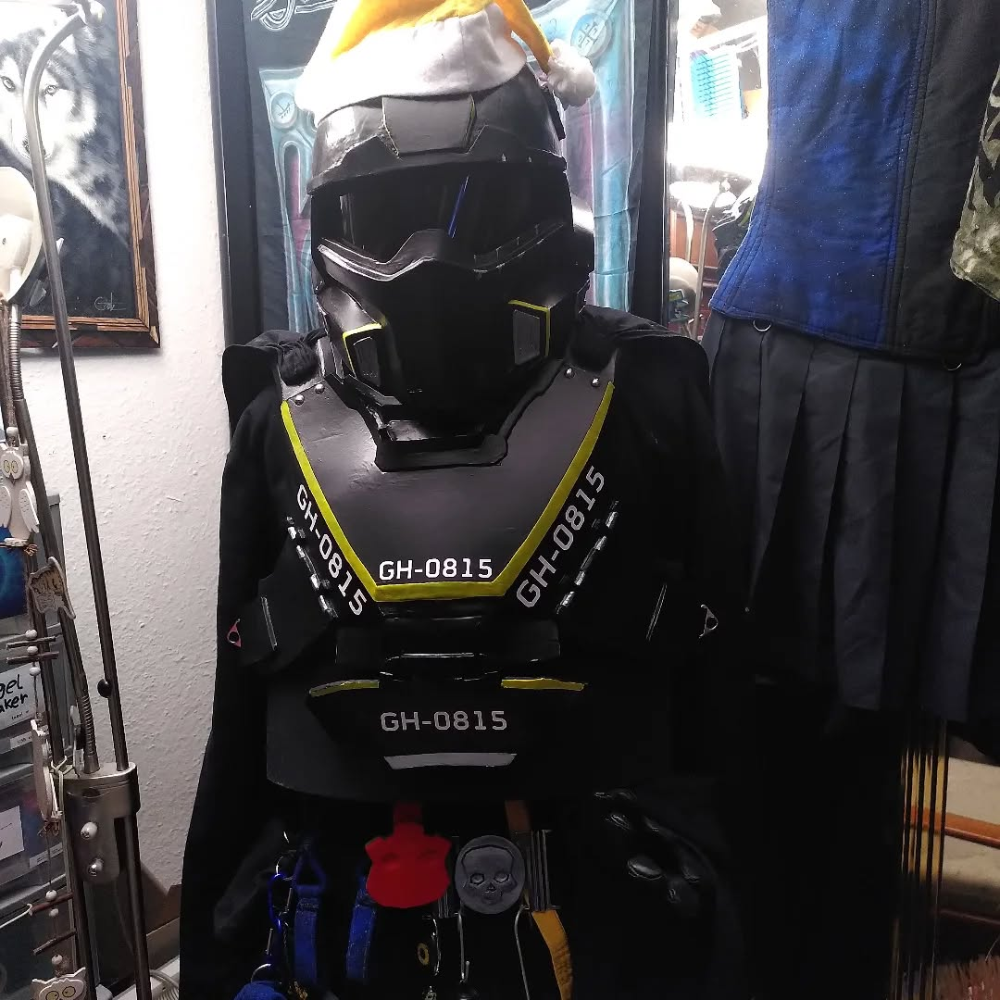
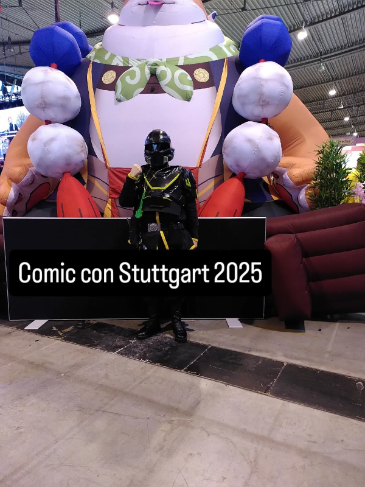

- Nachtrag vom 22. November 2026
Blubber Ecke 2025, März
Durch Krankheit leider verspätet aber die Blubber Ecke für 2025 ist gestartet. Gesundheitlich geht es ganz langsam bergauf, zumindest das Konzentrieren fällt mir inzwischen leichter.
Nachtrag zum 23.12.2025
Nachträglich Fröhliche Weihnachten! Die Gelbe Mütze gabs mal als Geschenk beim örtlichen Nahverkehr. Die Stratagem Kugel hab ich mal von Schatz zu Weihnachten bekommen. Diesmal schon mit der Bezeichnung GH-0815.

Nachtrag zum 30. November 2025
Comic Con Stuttgart 2025. Erste Ausführen der EVA-Schaum Rüstung von Helldivers 2. Für das erste mal eine Rüstung machen und ohne 3D-Drucker ist das Ergebnis sehr gut. Man sieht zwar die Verbindungen der einzelnen Teile (vor allem an den Helmen) aber für "schnell" mal zusammen geschustert gut. Das Bild auf der Schneiderpuppe ist vom 4. Dezember 2025. Leider sind ein paar der Rüstungsteile auf der Comic Con direkt beim anziehen kaputt gegangen. Daher ein ganzes Bild nach der Reperatur.
